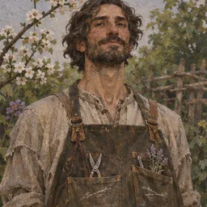
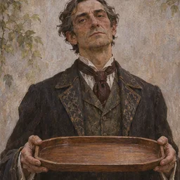
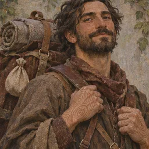

Вечер 1
Фрукт, который слышит
Выслушать первые просьбы, отделить наблюдения от слухов и прекратить новые случаи от проданной партии без преследования заболевших.
Открыть сценарий →После урожая зимних груш у взрослых жителей появляются нежные листья в волосах, стеклянные ногти и странный голод по свету или звуку дождя. Они остаются собой, но привычная жизнь меняется. Вы отправитесь за несколькими способами лечения и вернётесь с вопросом труднее любого заклятия: кто вправе выбирать, какой ценой человек выздоровеет?

Перед чтением вступления сверьте место героев, присутствующих людей и предметы с итогом прошлого вечера. Если условия встречи отпали, сыграйте последствия там, где находится партия. Событие по расписанию может произойти за кадром. Герои узнают о нём от тех, кто был на месте.
Раздайте по одному листку на жителя. Запишите, на что каждый согласился и кто отложил решение. На рассвете сыграйте две встречи у разных дверей и покажите разные последствия даже для соседей из одного дома.
Груши ни есть, ни увозить не будем. Поставим у входа дежурного, который объяснит выбор каждому пришедшему. Ставим у ворот дежурного, который спрашивает каждого отдельно. Сад переживает ночь с плодами на ветвях. Часовой не решает за будущих гостей.
Сопоставим схему прививок с тремя отростками и обратимся к каждому отдельно. Доступные свидетельства — Схема трёх прививок, Отростки на трёх снеговых площадках. Три привитые ветви откликаются независимо. Общий сладкий отклик ещё ничего не говорит о конкретном госте. Проверяем три отклика за ширмой по очереди. Получаем разные ответы. Одно согласие не разрешает срывать другие плоды; решение передаём трём владельцам.
Отблески удержали площадку; подойти к одной прививке до рассвета не успели. Устраиваем свободный проход обратно к фонарю. Ставим там видимый знак и зовём Ивара после рассвета. Плод остаётся на своей ветви, пропущенный ответ записываем как неизвестный.
Для игры без подготовки: что говорят люди, места в стороне от главной дороги и прохожие. Пометки о правде слухов — только для ведущего; сказанное за столом становится фактом мира, лишь когда вы его подтвердите.
«Первую грушу урожая у нас всегда несли в Дом Фонарей, на удачу. Нынче принесли три, а съесть ни одну так и не решились».
Правда. Обычай, о котором Дара говорит в первом вечере. Эти три груши лежат у неё под стеклом и становятся уликой «Три нетронутые груши»; слух лишь подводит к ним и ничего не объясняет.
«Кто с заболевшим из одной миски хлебал, тому до весны зеленеть. Оттого их в лавки и пускать не хотят».
Неправда. Самый вредный страх долины. Гости приходят только с мякотью плода или его волшебным отваром, а не через посуду, дыхание или соседство. Это голос из шерстяного ряда в первом вечере; опровергают его улика «Корзины без гостей» и наблюдения Дары.
«Хворь из Иварова сада, это всякий скажет. Тени там ещё до сбора росли длиннее деревьев, а он знай себе груши снимал — значит, знал».
Отчасти правда. Правда, что гости пришли из его прививок и что тени он видел до сбора. Неправда, что он знал о переменах в людях: тени он счёл добрым знаком. Ивар сам признаётся во втором вечере; слух показывает, как поиск виноватого подменяет вопросы.
«Серебряный жетон Круга снимает всё разом: и листья, и звон ногтей, и тягу к огню. Человек снова как вчерашний».
Отчасти правда. Отделение и правда убирает всех гостей и их видимые признаки, но навсегда забирает ощущение сладкого вкуса, так что «как вчерашний» — не совсем. Так пересказывают короткую памятку Круга; полную цену называют оборот жетона и Веска в третьем вечере.
«Фонарщик из Мохового колодца сам с листьями на бровях ходит, а фонари чинит не хуже прежнего. Почтари к нему со всей долины носят».
Правда. Бохан действительно носит гостей и живёт обычной жизнью; как он с ними договорился, он покажет в четвёртом вечере. Сколько лет это длится и чего ему это стоит — его личная история, её он рассказывает сам, если захочет.
«Шёлковый узел, говорят, голос забирает. Кто его наденет, тот уж больше никогда не запоёт».
Отчасти правда. Узел забирает только певческий голос и только на девяносто дней, речь остаётся, потом песня возвращается. Слух пригодится в пятом вечере: временная потеря от этого не становится пустяком — об этом лучше всего спросить Эллу.
«С гостем света сядешь у огня погреться — и прирастёшь к лавке, хоть дом гори».
Отчасти правда. Без помощи гости и правда понемногу склоняют человека к долгой неподвижности у желанного света, звука или места. Но это обратимо, это не смерть и не утрата себя, и тайного счётчика нет. Слух передаёт страх Немы из первого вечера, а не угрозу.
«Снежное полотно, говорят, ткут из живых мотыльков, оттого оно в тепле и не тает».
Неправда. Неправда: для шёлковой отсрочки берут только оболочки, которые мотыльки уже оставили, и те сами спускаются на добровольную песню. Сута охотно развеет слух в пятом вечере; ни один способ лечения не требует ничьей смерти.
«Круг Чистого Плода платит за каждую возвращённую корзину груш. Только просит взамен список, кто заболел, поимённо».
Правда. Так Орел и предлагает в первом вечере: деньги за отзыв партии в обмен на список для раздачи серебра. Дара готова назвать число, а не имена. Злого умысла за этим нет: Орел боится затяжной хвори и хочет одного ответа для всех.
«В Белой палате каждая дверь изнутри открывается. Кто там лежит, тот сам себе хозяин: захотел — встал и ушёл».
Правда. Палата так устроена нарочно: пациенты сохраняют выход и право отложить разговор. О том же просит записка у открытой двери в седьмом вечере; удобная реплика для тех, кто боится, что больных запрут.
«Элла-картограф по субботам поёт с друзьями под крышей рынка, как торговля кончится. Без неё, говорят, и песня не та».
Правда. Это правда из её собственных слов в пятом вечере: пение для Эллы — настоящая ценность, и цена шёлка для неё велика. Слух помогает героям понять это до разговора на Тихих ступенях, но решения за неё не подсказывает.
Деревянный горбатый мостик через ручей ниже Пустой мельницы. Перила отполированы ладонями до блеска, а к столбикам привязаны выцветшие лоскуты: в Тихой Чаше их вяжут за тех, кто ушёл в дальнюю дорогу, чтобы путь не забыл повернуть обратно. Носильщики любят здесь передохнуть, сняв поклажу: с горба видно и крышу рынка, и дорогу на перевал. Подо льдом ручей бормочет так громко, что разговор на мосту слышен только двоим.
Каменная ниша на развилке у Крапивного Рынка, чуть выше человеческого роста, с медной плошкой внутри. Кто идёт мимо ночью, подливает в плошку масла из своего фонаря, и огонёк в нише не гаснет всю зиму — так повелось ещё со времён фонарщиков. Вокруг на камне процарапаны имена тех, за кого просили доброй дороги. Этой зимой рядом стали оставлять записки: кому помочь донести дрова или постоять в очереди у мельницы.
Тесная пекарня на краю Крапивного Рынка, с низкой дверью и печью во всю стену. Нема открывает её до рассвета; на подоконнике остывают караваи, а в углу стоит лавка для тех, кто зашёл погреться. Над печью висит доска с заказами, исписанная мелом: именины, поминки, свадьбы, просто «к субботе». С тех пор как у хозяйки зазеленела прядь, соседи заходят сюда даже чаще: кто за хлебом, кто узнать, как она.
Низкий погреб под пустым зернохранилищем, где ткачи держат снег для полотна. Сюда носят только ночной, только что выпавший снег, в чистых корзинах с крышками, и укладывают слоями, перекладывая соломой. Внизу холодно и тихо, как в зимнем лесу, а ступени посыпаны золой, чтобы не скользили. Говорят, по скрипу снега под ногой опытная ткачиха узнаёт, пойдёт он в нить или растает в руках.
Крепкий дубовый ларь на столбе у развилки, где дорога от Тихих ступеней расходится к хуторам. Почтовые сани оставляют здесь письма и свёртки для дальних дворов, а хозяева забирают своё сами. Чужого не берут и не читают: кто взял свою почту, кладёт на крышку камешек, чтобы почтарь знал. К середине зимы на крышке вырастает целая горка, и по ней видно, сколько народу ещё ходит по дорогам.
Крупная торговка из шерстяного ряда в трёх шалях, с мотком серой шерсти на руке, который она мотает, не глядя.
«Шерсть греет, а от груш нынче — сами видите что. Я уж лучше при шерсти останусь».
Может рассказать: На ярмарку зимние груши возили только из сада Ивара, с южного склона: больше их в долине никто не растит.
Сухой жилистый старик с кожаной сумкой через плечо и бубенцом на шапке; в бороде у него иней.
«Письма не болеют. Давайте сюда, донесу до самого порога».
Может рассказать: Знает все дороги Чаши и подскажет, где под снегом наледь и каким спуском в Зеркальный разрез идти безопаснее.
Румяный детина в овчине нараспашку, с вязанкой поленьев за спиной и рукавицами, заткнутыми за пояс.
«Зеленеть не все зеленеют, а мёрзнуть все мёрзнут. Дрова берите!»
Может рассказать: Возит дрова в Белую палату и Дом Фонарей и знает, что там топят и днём, и ночью, а двери не запирают.
Маленькая старушка в вязаном капоре, с прямой, как у девушки, спиной и неожиданно звонким голосом.
«В субботу поём под крышей рынка. Приходите: слушать тоже надо уметь».
Может рассказать: Помнит, что под крышей Крапивного Рынка поют каждую субботу, сколько она себя знает, и что Элла запевает там чаще других.
Молодой парень в чистом сером фартуке, с пачкой печатных листков под мышкой и очень серьёзным лицом.
«Возьмите листок. Круг помогает всем, кто попросит, — так велено говорить».
Может рассказать: Склад Круга на Пустой мельнице открыт с утра до темноты, а Орел сам пересчитывает мешки каждый вечер.
Широколицая хуторянка в валенках, с санками, к которым привязан пустой бочонок.
«Мне бы до мельницы, за мукой. А то у нас на хуторе про хворь одни слухи».
Может рассказать: На дальних хуторах зимних груш почти не покупали — дорого, — и там никто не заболел.
8 сессий по 150 минут: 15 минут согласования и воспоминаний, три сцены по 35 минут, 15 минут перерыва после второй сцены, 15 минут завершения. Подготовленные герои — уровень 3. Прочитайте первую сессию, выберите состав и передайте игрокам отдельную страницу героев.
В мастерской создайте или откройте свой черновик, выберите импорт пакета и укажите package.json либо нужный файл из variants. Проверьте сценарий и состав в предпросмотре; активацию подтверждает ведущий. Сюжетные развилки, часы давления и жанровые действия разрешаются ведущим — они не становятся автоматически сыгранными событиями.
Пакеты разных размеров используют первые N героев в порядке карточек. Дополнительные герои дают новые роли, но не обязательные ключи к истории. Выбор произвольного состава требует правки черновика и повторной проверки.
Тревожная красота и несходство собственного тела с привычным образом; достоинство пациентов, сухой юмор исследователей и заслуженная надежда. Хоррор строится на шелесте там, где человек ожидал услышать себя.
Выслушать первые просьбы, отделить наблюдения от слухов и прекратить новые случаи от проданной партии без преследования заболевших.
Открыть сценарий →Проверить происхождение гостей двумя независимыми способами и выбрать порядок вылазок за помощью.
Открыть сценарий →Получить честно описанный способ отделения и решить, сколько работы и запасов ему посвятить.
Открыть сценарий →Найти независимое объяснение гостей и проверить способ сосуществования, не объявляя его морально лучшим выбором.
Открыть сценарий →Получить временный способ помощи и проверить, как предложить время, не обесценивая его личную цену.
Открыть сценарий →Сравнить реально найденные способы, обнаружить соблазн единого ответа и привести обещания в соответствие с запасами.
Открыть сценарий →Провести настоящие раздельные выборы, согласовать помощь при ограниченных запасах и решить, кто вправе участвовать в применении средств.
Открыть сценарий →Провести только выбранные действия в реальных условиях, сохранить помощь отказавшимся и дать каждому личный, условный эпилог.
Открыть сценарий →
Женщина с короткими седыми волосами и связкой маленьких ключей на поясе.
Хранительница Дома Фонарей организует отдых и записывает желания пришедших.
Получить понятные варианты помощи и не превратить приёмную в место приказов.
Дара боится, что сама предпочтёт быстрый общий ответ, когда людей станет больше. Она признаёт этот страх только в спокойном разговоре.
Не может назвать безопасный способ лечения на основании одного похожего симптома; не знает запасов других мест.
Показывает обезличенные записи после просьбы проверить наблюдение; личные желания передаёт только с разрешения соответствующего пациента.

Высокий садовник в потёртом фартуке; на карманах мелом подписаны названия рядов.
Выращивал зимние груши и теперь прекратил сбор, ожидая исследователей.
Понять свою ошибку и помочь, не объявляя каждого заболевшего своей собственностью.
Прививал три разных отростка дремолиста, заметил необычные тени и счёл их безвредными. Тогда он действительно не знал о возможных изменениях людей.
Не знает, какие люди заболели, чего хотят пациенты и что делает серебро; его раскаяние не доказывает универсальную вину за любые будущие события.
Открывает записи при конкретном вопросе о прививках или когда герои предлагают помочь остановить поставки; угрозы заставляют его уйти, но записи остаются на открытой полке.

Пекарь с зелёной прядью у виска и сухим мучным следом на рукаве.
Принесла в приёмную свой фонарь и просит называть её по имени, а не по симптому.
Продолжить печь и сохранить право выбирать собственный облик.
Нема допускает, что оставит зелёную прядь, если голод по свету станет управляемым; пока она боится насмешки и говорит только о лечении.
Не является доказательством состояния всех пациентов; согласие осмотреть её прядь не означает согласия на любой опыт.
Рассказывает о желании сохранить прядь, если кто-то прямо допускает такой вариант и не обещает уговорить её позже.

Строго одетый распорядитель с чистым деревянным подносом и усталым взглядом.
Представляет Круг Чистого Плода, собирающий припасы и оплачивающий серебряные жетоны.
Быстро прекратить изменения и получить ясный список тех, кому помощь уже оказана.
Орел прочёл предупреждение о безвозвратной потере сладости, но готов убрать его из краткой памятки. Он считает это управлением тревогой, а не ложью.
Не знает скрытых решений пациентов и не может предсказать эффект новых способов. Его должность не даёт магического права лечить без согласия.
Признаёт содержание предупреждения при предъявлении его собственной памятки или прямом вопросе Веске; под давлением сначала защищает своё решение, а не раскрывает все мотивы.

Невысокая мастерица в тёмных очках с серебряной застёжкой на вороте.
Работает с отражениями и считает цену своей работы частью самого договора.
Передать способ отделения вместе с честным предупреждением о его пределе.
Веска сама когда-то выбрала отделение и не чувствует сладкого. Она не жалеет о выборе, но не желает становиться примером, обязывающим других.
Не знает происхождения нынешнего урожая и не может оценить, подходит ли другому человеку её личная цена.
Объясняет цену до передачи любого жетона. О своём опыте говорит после вопроса, на который ей позволяют не отвечать.

Фонарщик с крошечными листьями на бровях и тщательно начищенной лампой.
Уже много лет живёт возле колодца и чинит дорожные фонари.
Показать свой способ жизни без превращения его в обязательный образец для всей долины.
Бохан два года носит всех трёх гостей после проб дикого плода. Он научился договариваться с ними, но иногда тяготится еженедельным часом тишины.
Не знает серебряного способа, состояния нынешнего сада и будущего согласия своих гостей с другим человеком; предлагает проверку, не гарантию.
Показывает три старых образца и разрешает раздельную проверку, если его не называют доказательством того, что все обязаны приспособиться.

Ткачиха с несколькими белыми нитями, завязанными поверх тёмной косы.
Ткёт полотна из снега, который остаётся мягким в тёплой комнате.
Дать людям время, не выдавая временную остановку за окончательное лечение.
Сута отказалась увеличить заказ Круга, когда поняла, что Орел хочет убрать из описаний слова о личной цене. Это не означает, что она знает его дальнейшие планы.
Не знает, кому подойдёт её способ, и не может продлить срок обещанием; не умеет отделять гостей.
Даёт точные условия до опыта; показывает переписку о заказе только после обсуждения того, как герои сохранят её предупреждение.

Картограф с прозрачными ногтями, которые тихо звенят при прикосновении к бумаге.
Любит петь с друзьями и составляет карты тихих путей по долине.
Выиграть время для решения, сохранив собственный темп и возможность ездить в гости.
Элла уже решила не отдавать певческий голос ради чужого спокойствия. Она может выбрать отсрочку ради собственной поездки, но только после честного разговора.
Не знает условий ещё не объяснённых способов и не принимает решения за остальных; её отказ не является симптомом болезни.
Говорит о голосе и поездке, если ей предлагают выбрать время разговора и допускают ответ «пока ничего».

Дорожный носильщик с мягким древесным узором на ладонях и аккуратно собранной сумкой.
Остановился в Белой палате и по-прежнему помогает соседям переносить лёгкие вещи.
Снова свободно выбирать дорогу и не обязаться оставаться возле одного места.
Фер готов потерять сладкий вкус, если цена именно такова; он опасается, что его сочтут трусом за желание убрать заметные признаки.
Не знает, какое средство ему предложат; не одобряет планы Круга заранее и не говорит от имени всех путешественников.
Объясняет приоритет после вопроса о следующей желанной дороге; согласие на отделение даёт только после предъявления цены и альтернатив.
Небольшая долина, окружённая низкими холмами, с тёмными садами по склонам и деревнями на дне. Дороги здесь укатаны так, что связывают обжитые места даже зимой: по ним возят хлеб, дрова и почту, а в морозные ночи слышно, как в садах звенят обледеневшие ветки.
Светлая приёмная в старом доме фонарщиков, где когда-то чинили и заправляли лампы для всей долины. Теперь вдоль стен стоят отдельные стулья, лампы горят разными оттенками — янтарным, голубым, зелёным, — а входная дверь всегда открыта, и рядом висит доска для записок. Пахнет воском, ромашковым отваром и мокрой шерстью.
Посёлок вокруг крытого рынка под широкой черепичной крышей; название ему дала крапива, которой когда-то перекладывали фрукты, чтобы не мялись. Хлебные и шерстяные ряды работают, а фруктовые прилавки пусты: вместо груш на них лежат записки соседям, придавленные камешками, — кто чем может помочь и кого навестить.
Сад Ивара на южном склоне: ряды низких груш, подвязанных к кольям, стоят под снегом, и на ветках ещё висят несобранные плоды в ледяной корке. Сбор остановлен, лестницы сложены у ограды. Некоторые плоды отбрасывают несоразмерно большие тени, длиннее самого дерева, и тени эти не всегда ложатся от солнца.
Тёплый садовый дом у края сада, где Ивар зимой режет и прививает черенки. На полках стоят горшки и подписанные веточки, на гвоздях висят срезанные цветные ленты, на столе лежат нож, банка садового вара и стопка тетрадей с пометками мелом. Пахнет смолой, сырой землёй и печкой.
Узкий овраг за холмом, где из склонов выходят плоские тёмные камни, гладкие, как полированное стекло. Они отражают свет даже в пасмурный день, а отражения иногда запаздывают на один жест. Сюда ходят мастера отражений; детям в долине с давних пор велят не корчить рожи у камней — говорят, отражение может обидеться.
Широкая сухая цистерна, вырытая когда-то на случай засухи и так и не пригодившаяся. По стенам спускается каменная лестница, мох на кладке светится мягким зеленоватым светом, а на крюках висят дорожные фонари, которые чинит здешний фонарщик. Внизу тихо, тепло и пахнет копотью и влажным камнем.
Ткацкая мастерская под крышей пустого зернохранилища. Здесь ткут полотно из снега, который остаётся мягким в тёплой комнате, — местное ремесло, которому не учат за пределами долины. Белые нити на станках колеблются, даже когда окна закрыты, а под балками сидят светлые мотыльки и не боятся людей.
Бывшая мельница на ручье, у которой давно сняты лопасти; теперь Круг Чистого Плода держит здесь склад помощи. На столах, покрытых чистой тканью, рядами лежат свёртки, мешки с мукой и стопки печатных листков с печатью Круга. Пахнет мукой, сургучом и холодным железом, а под полом всё ещё шумит ручей.
Каменные уступы на склоне под длинным деревянным навесом, где путники и почтальоны пережидают метель. Здесь сухо и гулко: слышно, как снег соскальзывает с крыши и как внизу по дороге скрипят полозья. На столбах навеса вырезаны отметки высоты сугробов за много зим, и местные спорят, какая из них самая старая.
Гостевой дом, который этой зимой стал палатой для тех, кому нужен покой: просторная общая комната с печью, кровати за личными белыми занавесями, полки для своих вещей. Каждая дверь открывается изнутри, и у каждой на шнурке висит карандаш. Пахнет липовым чаем и свежим бельём.
Условия: Открыты минимум два способа, побочные цены названы, пациенты получили свой выбор и обещанная помощь действительно доставлена.
Кто-то уходит без листьев, кто-то зажигает собственный живой фонарь, кто-то выигрывает время. Эпидемия перестаёт определять единственную судьбу долины.
Цена: Нужны последующие визиты и новые небольшие вылазки; герои отвечают за конкретные обещания, а разные облики остаются частью повседневности.
Условия: Есть серебро и добровольное согласие каждого получателя после честного объяснения цены; отказавшиеся не лишены обычной заботы.
Выбравшие отделение избавляются от гостей. Нема, если тоже согласилась, решает сама, как продолжить работу без ощущения сладкого.
Цена: Потеря вкуса необратима. Герои не могут объявить этот вариант победой за людей, которые предпочли ждать или сохранить изменения.
Условия: Доступна отсрочка или согласованная поддержка, а будущая помощь описана честно как план, не гарантия.
Люди получают время, открытые дороги и возможность передумать. Последняя сцена — личные планы, а не объявление всеобщего исцеления.
Цена: Певческий голос временно недоступен выбравшим шёлк; последующая экспедиция остаётся реальной работой. Неполученное средство не появляется само.
Условия: Круг навязал серебро части пациентов либо герои потеряли запасы; принуждение названо вредом и пострадавшие определяют дальнейшие отношения.
Все остаются живы, но доверие нельзя восстановить речью победителя. Герои могут обеспечить уход отказавшимся, признать ошибку и поддержать отдельные требования людей.
Цена: Уже совершённое отделение и его цена не отменяются. Прощение не гарантировано, а эпилог допускает расставание с героями или Кругом.
Авторская подготовка и техническая проверка не заменяют живую игру. Длительность, сложность и эмоциональное восприятие пока не проверены группой. Картину первой встречи можно открыть отдельно. Тактические схемы построены из данных встреч. Полный каталог содержит материалы ведущего — публиковать его целиком для игроков нельзя.